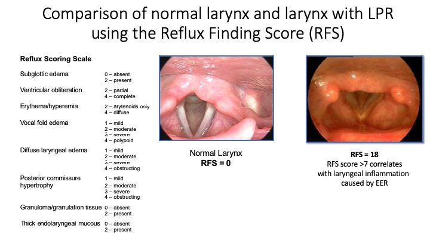
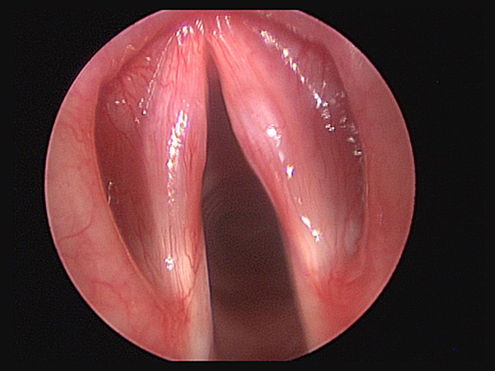
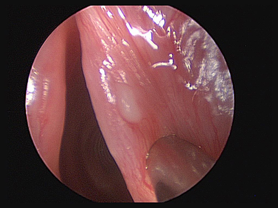
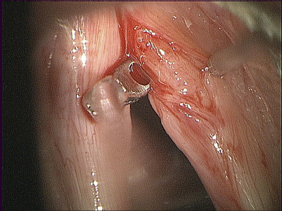

Chapter 9
By Lucinda Halstead, M.D.
Vocal Health
The material in this chapter is intended to provide rudimentary information about disorders of the voice and vocal health issues. It is not meant for use as a diagnostic or therapeutic tool, nor as a substitute for consultation with an otolaryngologist, and preferably a laryngologist, who specializes in the medical problems relating to voice. In this chapter, many problems affecting the vocal folds will be described. It should be noted that with the proper practice habits, attention to vocal conservation, good nutrition and exercise, most of the pathologies that will be shown can be of avoided.
Being a Singer is a Lifestyle Choice
DO YOU KNOW:
Although we have the answers to these types of questions for athletes, especially baseball players, ice skaters and football players (and, believe it or not, Marching Band performers), we have no answers yet to these questions for singers. Because of this, the focus of vocal health is undergoing a dramatic transformation for singers and other vocal professionals. There is currently a tremendous push to teach young vocalists how to care for their bodies in the same way that athletes care for their bodies. The Athletes and the Arts Coalition has been growing across the United States and worldwide and is partnering with the National Association of Teachers of Singing (NATS), Music Teachers National Association (MTNA), Performing Arts Medicine Association (PAMA) and Voice Foundation (VF), among others. Research in Performing Arts Medicine is focusing on issues including:
Increasingly, these concepts are being embraced and integrated into many college programs. This chapter is dedicated to introducing many of these concepts to vocal performers in addition to providing information about basic medical problems affecting the voice and vocal folds.
The Ecstasy of Performance / The Agony of Injury
This is the larynx of a young soprano who is ready for her professional opera auditions and competitions. She practices 1-2 hours/day and sings in the college choir. Ten weeks later, she is one week away from her Metropolitan Opera audition. What Happened? Read on! (9/1 a & b).[1]
Video 9/1a shows a classically trained coloratura soprano performing her highest tones. She is ready to sing professional auditions.
In video 9/1b, she acutely develops a raspy, breathy voice and limited range, 10 days before her Metropolitan Opera audition. She had not overused her voice.
Healthcare: When to Seek Treatment, Doctors & Insurance
There are a few imperatives:
What is the Difference Between a General Otolaryngologist and a Laryngologist?
A general otolaryngologist has broad general training in all the areas of Otolaryngology—Head and Neck Surgery without specializing further in any particular area. They can be helpful in diagnosing routine problems with allergies, hearing loss or sinusitis. However, they lack the specialized equipment and knowledge to help singers with their vocal problems. Happily, most of these wonderful MDs have great respect for singers and realize the need for further, specialized evaluation. When they refer you, it is because they are aware that more specialized knowledge of singers and more expensive, specialized equipment is needed to evaluate your vocal folds. They are brilliant and concerned professionals.
A laryngologist is an otolaryngologist who has had additional specialized training the area of voice, voice disorders and swallowing. They have specialized equipment including:
9-2a demonstrates a well-exam for a male singer. The images you see present a typical appearance of a normal baritone larynx. Note the slightly red color of the true vocal folds (TVFs), which is common, and normal in baritones. The supraglottic structures are pale salmon color. Stroboscopically, the muscosal waves are normal and easily produced.
9-2b shows the singer from 9/1, but while is ill with a severe upper respiratory infection (URI). Note the puffiness and stiffness of the vocal folds, which causes the mucosal waves to be stiff and small, and results in a strained vocal quality. The color of this singer’s inflamed larynx is not necessarily typical; frequently, the inflammation of laryngitis leads to a more prominent redness.
Insurance
At this time, the United States is undergoing a tremendous change in its healthcare system. The full impact of this change is unknown. However, there are several things that are critically important for young singers and all vocal professionals to know when it comes to health insurance.
It is imperative that you have health insurance that will allow you to see a laryngologist -i.e. an otolaryngologist that is a voice specialist. As noted in the previous section, a laryngologist has specialty training in the voice and swallowing and is aware of the vocal problems of singers and how to treat them. Although education in the needs of vocalists is improving throughout residency training programs in the United States, it is not widespread at this point. Referral to a general otolaryngologist will not give you the level of treatment you need for your unique professional problems. When buying insurance, you need to be sure that it will allow you to see a laryngologist in every state of the union so that if you are injured or ill while on tour, you can receive care and be covered. College voice students need to encourage their parents to secure insurance for them that will allow them to be seen by laryngologist wherever they are in school. This might mean selecting an insurance plan that is not the cheapest available. However, attempting to pay out of pocket for treatment can be prohibitively expensive – even under the new health care system.
Form a Doctor/Patient Relationship with a Laryngologist near you
Singers need ready access to a laryngologist who can do a detailed laryngeal exam. Names of laryngologists near you can be obtained through the Voice Foundation. If one is not available in your community, a general Otolaryngologist (ENT) who loves music and singing will be more attuned to your special needs and be able to facilitate your being seen by a laryngologist as close to you as possible. Schedule a “well” visit so the laryngologist can establish a baseline and document laryngeal appearance when you are healthy. This allows subtle changes in the appearance and function of the larynx to be detected and leads to earlier, more accurate diagnosis of problems. Visit the doctor sooner rather than later if there is any prolonged vocal distress or a sudden change in vocal quality. Learn to recognize the symptoms of voice disorders, particularly acute or chronic changes in voice quality and/or pitch range.
The Unique Singer/Laryngologist relationship
The trust and total honesty that should be present in any doctor/patient relationship is a thousand-fold more important for the singer. Total truth about your lifestyle, practice habits, non-singing vocal demands and compliance with medical and voice therapy is essential because further treatment of your condition will be based on the appearance of your larynx in response to the treatment prescribed. Surgery may be recommended based on exaggerated reports of compliance with therapy. Worse, the lesions will recur if the underlying vocal behaviors or medical conditions causing the problem are still present. A typical example is the singer with vocal nodules whose nodules appear to be unresponsive to singing and speaking voice therapy. The singer insists that they have been compliant with therapy. The singer undergoes surgery with perfect results, but the lesions rapidly return after surgery since the singer continues the vocally abusive behaviors (9/3). Finally, lack of honesty with your laryngologist will cost you a lot more money by prolonging treatment.
9-3a shows a singer with nodules after 12 weeks of singing and speaking voice therapy. Note the stiffness of the mid-portions of the TVFs under the nodules
9-3b presents same singer 2 weeks after Pulse Dye Laser photocoagulation of the nodules. Note the resolution of the nodules and the restoration of the normal mucosal wave
9-3c is from 4 weeks after surgery. The singer resumed her pre-operative vocal habits two weeks after her surgery. Note the return of the nodules to their preoperative appearance
The Voice is that which is Unique in Each of us. It Embodies our Soul.
Why should I care about my speaking voice?
Good speaking habits are very important for maintaining vocal health. While this applies to all people who rely on their voices in their work, from accountants to zoologists, it is crucial for professional voice users such as actors, teachers, doctors, salespeople, public speakers and singers. Approximately 50% of singers will have poor speaking voice habits which will adversely affect their singing voice. Habits such as speaking with poor breath support, speaking with vocal fry and using excessive tension in the neck and tongue can predispose the vocal folds to vocal nodules and cause the muscles to fatigue very quickly, causing pain. Spending hours slumped over your cell phone, computer and I-pad can cause you to have short, tight abdominal muscles and stooped shoulders, which over time can become habitually permanent. This posture inhibits good breath support and forces the muscles of the neck and larynx to strain to provide the necessary subglottal pressure for the vocal folds to vibrate. This type of strain can predispose to swelling, nodules, polyps and pain with singing and talking.
The minute you decided to be a singer, you became a voice professional. Part of your job is to nurture and protect all aspects of your voice. Think about your part time and summer jobs: What are the vocal demands and potential for vocal injury? Jobs such as working as a tour guide, waitperson in a noisy restaurant or bar, aerobics instructor, camp counsellor, nanny and lifeguard can put excessive strain on your speaking voice and lead to injury.
TIPS for speaking correctly include:
The Healthy Singing Voice
How do I know how much singing is too much singing?
It is very important for each singer to understand the unique limits of their instrument. While some people can sing many hours at a time and seemingly not have a voice problem or fatigue, for others (and indeed most) the hours of practice must be structured to minimize injury and fatigue. It is very important to understand that your stamina and vocal endurance invariably is different than that of your friends. Practice should never continue to the point of hoarseness, pain or severe fatigue. If you are sick and your voice is significantly impaired, do not sing (if you have a minor head cold and only your resonance is altered, it probably is fine to sing). Studying the music for meaning, style and nuance, and mental practicing (mentally singing each note and being aware of the breath support and position of the larynx and vocal tract) has been shown to be very effective when you are sick.
The Athletes and the Arts initiative is now trying to quantify how much singing should be done at each level of a singer’s developing voice. While there are no answers yet, we can learn how to prevent injury by observing the changes in training for football players, ice skaters and baseball players. None of these athletes spend more than a couple of hours vigorously performing their sport on a daily basis. Much of the time is now spent cross training to develop muscular strength, flexibility and mental focus. In the future, we hope to be able to give singers guidelines for vocal practice and for overall physical fitness to prepare for the rigors of rehearsal and performance.
Warm Up
No matter how pressed for time you may be, warming up prior to singing in the extreme parts of your range is essential. Get in the habit of structuring your practice time to include a warm up. Also, singers with underlying medical conditions such as reflux or asthma may have a more difficult time warming up and a few extra minutes should be included in the warm up time to allow for these conditions. Most importantly, when warming up for a performance you should not test the extremes of your range more than a couple of times. Often young singers are tempted to “check their money note” many times to be sure that it is there, only to find that they have now over sung that note and it is not there in performance.
Cool Down
One of the most important and most often overlooked aspects of practice is the cool down. While athletes do this routinely, singers rarely do. Studies have shown that the cool down for singers is as important as the warm up to relax the vocal folds and neck muscles. Utilizing lip and tongue trills, breathy decrescendo sighs and mid- range humming while packing up your practice materials and preparing to go to your next activity are easy and effective cool downs.
Healthy technique is essential
The vocal folds require adequate hydration for normal function. Drink 8-12 large glasses of water per day. Laryngologists say, “sing wet, pee pale” (with appropriate hydration, urine will be nearly colorless). Try to avoid dehydrating beverages that contain caffeine or alcohol. However, if you need caffeine, use in moderation and offset drying effect as much as possible ounce for ounce with water.
Cigarette smoke dries out the vocal folds and has impurities that can cause cancer of the larynx. Also, the smoke causes swelling of the vocal folds and will eventually lower your pitch as the swelling become permanent and increases the mass of your vocal folds. To top it off, smoking causes you to get facial wrinkles at an earlier age.
The voice is naturally resilient but requires adequate rest for recovery. Try to maintain regular sleep patterns and avoid strenuous voice use when the body is abnormally fatigued. This is one of the prime recommendations I make to the elite performers I treat while on tour. Turning off the phone and sleeping is the ultimate and easiest vocal rest.
Colds and upper respiratory infections can sometimes be avoided through frequent, thorough hand washing. Viruses often infect our bodies through hand contact with mouth, nose and eyes. Washing the hands frequently (especially after exposure to public articles such as hand rails and door knobs) helps reduce the risk of viral and bacterial transfer.
Before dismissing this admonition as being totally unrealistic, it is important for all singers, especially students, to remember that if you injure yourself by performing while sick, your college will not indefinitely hold your scholarship and the directors of a professional /community theater productions will not pay your medical bills to help you recover from your injury. Prevention of injury is key. If you feel that you are becoming ill, seek medical attention earlier rather than later. A fever and copious respiratory secretions that are not improving after 3 days should be treated with an antibiotic. You may have to be insistent about obtaining an antibiotic when visiting the health care professional at the university clinic. That is why it is a good idea to become a patient of your local laryngologist who will fully understand your situation and the importance of early treatment. Most importantly, notify your director and teachers of your problem so that they relax their demands on you. Mark your rehearsals, limit or eliminate social voice use, and get plenty of sleep. Your directors and teachers can also assist you in getting access to specialized medical attention, if needed.
There are select times that judicious alteration of the performance demands combined with medication can allow a performance to go forward. It is important to have very strict pre-and post- performance voice rest during these times. An otolaryngologist, preferably a laryngologist, should be actively involved in your care during this time. But remember, anything that a physician does to enable you to perform also enables you to injure yourself further.
Many prescription and over-the-counter drugs can affect the voice. Ask your doctor about possible voice-related side effects for any medications you regularly take.
How can I sing if I can’t breathe?
Because of their dehydrating effect, many singers find it helpful to avoid regular use of antihistamines and decongestants, whether obtained over-the-counter or with a doctor’s prescription. Treatment of allergies with topical nasal steroids or allergy shots are good alternatives. Use of all of these should be discussed with your doctor or laryngologist.
However, there are times that temporary relief of severe allergies or a severe cold is needed to breathe, but preferably not to sing. The mechanism of action of antihistamines, decongestants, mucus thinning drugs and cough suppressants is detailed below. In general, it is best to avoid cold or allergy preparations that are combinations of these medications since they usually have less than the optimal dose of each. It is better to understand how each preparation works and buy each individually, so you can obtain the maximum benefit from each medication and tailor the timing of each for maximum relief.
Antihistamines
Antihistamines stop blood vessels from leaking plasma (clear fluid in the blood) which causes runny eyes and noses. They can also cause drowsiness, thick mucus and dry throat. Some common antihistamines are Benadryl, Zyrtec, Allegra and Claritin.
Decongestants
Decongestants cause constriction of blood vessels which causes the membranes in your nose and throat to shrink. They can also cause anxiety, sleeplessness, high blood pressure, nervousness, dizziness and thick mucus. Some common decongestants are Afrin, Neosynephrine and Sudafed.
Mucus thinning drugs
Thick mucus is the bane of singers. Mucus thinning drugs work by drawing water from the body into the mucus. The cheapest and easiest, but not necessarily the most effective, treatment is drinking water to thin it (lots of it). Other common preparations are guaifenesin (plain Robitussin) or Mucinex without any other additives. Sometimes it is hard to find these without additives such as cough suppressants, decongestants and antihistamines since the general public has succumbed to advertising.
There are also more natural alternatives. Xylitol is excellent and comes in a variety of forms. Xylimelts are a dissolving wafer that is placed on the upper gum and releases its mucus thinning effect over time. They are also approved to be used while sleeping, which is a plus. They are available at Walmart and Amazon. Chewing gums and candy containing xylitol are generally available in health food stores, Whole Foods & Amazon.
Slippery elm is a Japanese herb and has some scientific studies to back up its effectiveness in thinning mucus. It comes in lozenges and tea. The lozenges can be found in most vitamin and health food stores & Whole Foods. It is also an ingredient in the original formula of Throat Coat Tea.
Cough Medicines
Dextromethorphan is the “DM” in all cold preparations. It decreases the activity in the part of the brain that causes coughing. It can also cause dizziness, lightheadedness, drowsiness, nervousness, restlessness, nausea, vomiting and stomach pain. The best antitussive is Delsym syrup (again without any additives). It is the strongest cough medicine available and is an over-the-counter medication.
Aspirin and non-steroidal anti-inflammatories (NSAIDS)
Avoid aspirin, ibuprofen and other non-steroidal anti-inflammatories (NSAIDS) due to increased risk of vocal fold hemorrhage. All these products increase this risk because they thin the blood by coating the platelets that form the clot. A single dose of aspirin will affect the platelets for 7 days; a single dose of ibuprofen or other NSAID will affect them for 48 hours. The most popular NSAIDS are listed in the chart below. Despite these warnings, NSAIDS are excellent if you have injured muscles or fever. It is OK to take them if you are not planning on singing for at least 48 hours. A common vocal injury scenario is the singer/dancer in performance who pulls a muscle and takes an NSAID for the pain in order to continue dancing and gets a vocal hemorrhage just with their normal amount of singing in the show.
Table 9-1: Over-the-counter medicines
|
Generic name |
Brand name |
|
Aspirin |
Anacin, Ascriptin, Bayer, Bufferin, Ecotrin, Excedrin |
|
Ibuprofen |
Advil, Motrin |
|
Naproxen sodium |
Naprosyn, Aleve, Anaprox DS, Naprosyn |
|
Diclofenac sodium with misoprostol |
Arthrotec |
|
Naproxen |
Arthritab, Bayer Select, Doan's Pills, Magan, Mobidin, Mobogesic |
|
Celecoxib |
Celebrex |
|
Magnesium salicylate |
Indocin, Indocin SR |
|
Diclofenac sodium |
Naprosyn, Aleve, Anaprox DS, Naprosyn Voltaren, Voltaren XR |
|
Salsalate |
Vioxx |
|
Sodium salicylate |
Amigesic, Anaflex 750, Disalcid, Marthritic, Mono-Gesic, Salflex, Salsitab |
Acetaminophen
Acetaminophen, such as found in the brand name Tylenol®, does not affect your platelets or thin your blood. It is generally considered safer for singers to use when they are sick. It is very good for pain and fever. Be aware that the dose recommendation for Acetaminophen has been decreased due to high doses of this medication causing liver damage.
Quick tip for menstrual cramps
Most of the over the counter preparations for menstrual cramps contain ibuprofen (NSAID) along with caffeine, so there is an increased risk of thinning of the blood and vocal fold hemorrhage. Relatively new on the market is Tylenol Ultra, which contains acetaminophen and caffeine. It is recommended for menstrual cramps and migraines and allows you to treat your cramps without the blood thinning side effects of NSAIDS. Take as directed on the bottle.
Vitamins
Fat soluble vitamins A, D and E taken in above normal doses for prolonged periods of time can thin the blood and cause vocal fold hemorrhage. Small and very thin individuals may develop bleeding problems with prolonged use of even regular adult doses of these vitamins.
Performance Altering Drugs
Performance altering drugs effect the singer by altering their perception of their performance, usually causing them to think that it is better than it actually is, and also by causing alterations in physiology, fine motor control and memory that can predispose the vocal folds to injury, as well injuring the mind and body.
Performance Anxiety—Beta-blockers
Beta blockers depress the heart rate and muscular tremor. The feeling is described as being analogous to driving with the parking brake on. Although these drugs seem to work well for instrumentalists, the effect is usually very negatively evident in a vocalist’s performance, causing it to lack sparkle, drive and energy. Studies have shown this effect is surprisingly easy for the audience to spot and there exist only rare reports of very low dose beta-blockade being imperceptible to a vocalist’s audience.
Alcohol
The immediate effect of alcohol is to decrease inhibitions & fine motor control. Limit alcohol intake and avoid strenuous voice use if “under the influence.” Long term overuse, more than 15 alcoholic beverages/week for men and approximately 8/week for women, can lead to permanent impairment of memory & fine motor control, and metabolic imbalance due to poor nutrition. It can also cause liver damage which will also cause thinning of the blood and predispose the vocal folds to hemorrhage.
Cannabis (Marijuana)
Be aware that marijuana smoke is significantly more damaging to the vocal folds than tobacco smoke since there are more impurities in the smoke. Using the drug frequently for short periods of time (months) causes loss of fine motor control which can predispose to vocal injury. Long term use (> 1 year) causes permanent alteration of brain function. It is unclear if the alterations in brain is reversible or if brain re-patterns after abstinence, but some recovery of function can occur.
Methylenedioxymethamphetamine (MDMA, ecstasy)
This drug causes permanent, irreversible alterations in brain function including marked verbal and memory deficits and impairments in learning, consolidation, recall and recognition. These impairments affect multiple areas of the brain simultaneously so that brain remodeling/retraining is almost impossible. These changes occur every time the drug is taken, making it the most dangerous drug. It is the ultimate neurological Russian Roulette.
Often overlooked is the sound pressure level (noise) in practice rooms, rehearsal halls and performance venues. Noise levels to exceeding 90 decibels (dB) occur frequently in these settings. The ear can recover from brief, intermittent, high noise levels, but not prolonged, repetitive, high noise levels. It is OK to listen to a favorite piece or song at a loud level as long as you turn the sound down after it is finished.
Tinnitus (ringing in the ears) is the warning sign that the ear has had excessive noise exposure. It is a warning that you need to protect your ears from further loud noise until it stops. It will occur after a loud noise and, in most cases, it will go away in a few minutes. Special attention to using ear buds is also important. Just because you use them on the lowest setting on your phone, i-pod or i-pad does not mean that the sound pressure level being delivered to your ears is safe. Unfortunately, testing the output of ear buds is very difficult. Being aware of tinnitus or a feeling of fullness after using them is a sign that the sound they are delivering is too high. Tinnitus caused by high noise levels in very loud concerts, movie theaters or car accidents may take a few hours or days to go away. If it doesn’t go away, that is a sign that some degree of permanent damage has occurred. Depending on the noise trauma, the damage can be slight or severe. Damage to the ear is cumulative, so further loud noise exposure worsens any existing hearing loss and, since your ears are already ringing, it may take a higher level of noise to make your ears ring even more. Although we cannot regrow that nerve cells in the inner ear that allow us to hear, we can help protect them. The antioxidants in blueberries are particularly effective in protecting the inner ear cells.
The Occupational Safety and Health Association (OSHA) and National Institute for Occupational Safety and Health (NIOSH) noise exposure time recommendations are listed below. NIOSH is more conservative in its noise exposure recommendations and their recommendations are backed by research. A great tool to have is a sound pressure level meter app on your phone. Obviously, your phone app will not be as accurate as a real sound pressure level meter, but it can give you an estimate of the noise level in your environment. If possible, try to compare the calibration of the app on your phone with a real sound pressure level meter. Monitor the dB level in your practice room.
Permissible noise exposure
|
OSHA DURATION PER DAY, IN HOURS |
SOUND LEVEL IN DB OSAH/NIOSH |
NIOSH DURATION PER DAY, IN HOURS |
|
>8 hours |
84 / 85 |
8 |
|
>8hours |
86 / 88 |
4 |
|
8 |
90 |
---- |
|
6 |
92 / 91 |
2 |
|
4 |
95 / 94 |
1 |
|
3 |
97 |
½ hour |
|
2 |
100 |
¼ or Less |
|
1 ½ |
102 |
0 hours |
|
1 |
105 |
0 hours |
|
½ hour |
110 |
0 hours |
|
¼ or Less |
115 |
0 hours |
Table 9-2: Noise exposures by amplitude and time
Studies are emerging showing toxic levels of noise exposure to choir members standing behind an orchestra. Sopranos seem to be especially vulnerable since they are usually standing behind the brass instruments. (Steurer, 1998)
Hearing is considered normal if all tested frequencies can be heard between 0-15 dB. Borderline hearing loss is generally suspected if the sound needs to be 15-25 dB of loudness and hearing loss is defined as only hearing the sound at a level of 25 dB or higher.
In 2016, Isaac et al screened voice teachers and singers at a State and a Regional NATS meeting for:
Results of the hearing screening revealed substantial hearing loss in voice teachers and singers. It is higher than that for the general population and higher than can be attributed to aging alone:
Voice Teachers: 51.7% screened positive for OHL
43.1% SCREENED POSITIVE FOR HFHL
Voice Students: 7.5% screened positive for OHL
5.7% SCREENED POSITIVE FOR HFHL
Pilot studies using sound level meters with some alerting device to inform the teacher/conductor of the sound level in the rehearsal and practice rooms and studios are in progress with the goal of limiting excessive noise exposure to the suggested NIOSH limits.
It is worthwhile for musicians to always carry earplugs in their bags or pockets to reduce noise trauma, which can occur at anytime and anywhere. Be prepared! Musician’s ear plugs give a 12dB attenuation across the acoustic spectrum. Although the noise attenuation with these plugs is not perfect, they do afford you some protection, allow you to hear your music well while practicing and are widely available. Research is ongoing to produce ear plugs that give more protection yet provide musicians with the fidelity feedback necessary for performance.
All singers benefit from ongoing cardiovascular exercise. Do to the stationary nature of practicing, physical fitness among musicians of all genres tends to be lower than the average person of the same age. This is bad since deconditioned muscles are more prone to injury. Good physical fitness helps stave off illness, protects your back, sustains the energy levels required for performing, and improves physical appearance. Good physical appearance aids in winning competitions and getting roles.
A regular exercise routine is essential. Exercise smart! Make it fun or you will not stick with it. Develop aerobic and flexibility/strength training routines that you enjoy and that will increase your chances of landing roles in operas and musicals. Dancing of all types—musical theater, ballet, jazz, ballroom, tap, hip hop—improves musicality, stage presence and movement, and is great exercise. Try unusual sports, such as fencing, Karate, or kick boxing. Most importantly, get a buddy! Having a friend to exercise with is one of the best long-term motivators.
Revamp your routine regularly to avoid plateauing and loss of maximal benefit. Your muscles will adapt to a routine and will burn fewer calories as they become more efficient. Studies on women doing the same exercise routine for 5 years (stationary bicycling for an hour 5x/week) showed the women gained an average of one pound a year, plateauing being part of the problem. The American Council of Exercise (www.acefitness.org) is an excellent source of information on good exercise practices.
A poor diet leads to under-fueling. This leads to excessive empty calorie consumption and negative effects on your overall health. Singers need to maintain their ideal body weight for their height to achieve optimal stamina, hormonal balance & health. Ideally, that diet should emphasize foods with a low glycemic index, have a moderate amount of protein and be low in carbohydrates and fat. Foods with a low glycemic index cause a slow release of glucose into the blood stream, which helps you to feel full longer and have more energy for longer periods of time. Lists of foods that have a low glycemic index can be found on the internet. The Mediterranean type diet is a good example. Again, studies to determine the optimum calorie needs for singers is one of the future goals of the Athletes and the Arts initiative.
Eating Disorders are not just for dancers anymore–Anorexia, Bulimia and Binge Eating. With the increasing pressure for believability in operatic and musical theater roles, the pressure for individuals to be at or below their optimal body weight is tremendous. Some voice and choral programs have strict height to weight requirements and dismiss those who cannot maintain them, which can promote eating disorders.
The difference between careful diet and exercise and an eating disorder is immense. Each eating disorder has an underlying psychological basis and can lead to severe, occasionally irreversible, health problems, malnutrition, and death. In anorexia, there is the need to control one’s body by severe dietary restriction, excessively vigorous exercise and purging with laxatives, diuretics, and enemas, and to relate the success of that control to self-worth. Binge eaters are driven uncontrollably to eat and will consume a very large quantity of food. The motivation is usually stress and depression. After bingeing, depression and poor self-esteem intensifies and the process begins again. Bulimics often have a combination of these disorders. They feel driven to eat large amounts of food and then purge themselves by primarily by vomiting, but also use the other methods that anorexics employ.
Figure 9-1: Self-image of a person with anorexia: all genders and ethnicities are susceptible
For singers, bulimia is especially punishing on the voice as the large amounts of gastric acid in the vomit causes swelling of the vocal folds and loss of range, timbre, and endurance. The acid also will eat the enamel off the teeth and give the person horribly bad breath.
Encourage anyone you know with these disorders to seek comprehensive medical treatment: it may be lifesaving!
Some sexually transmitted diseases (STDs) including herpes, gonorrhea, HPV, and HIV/AIDS can infect the vocal tract and larynx. People with immune systems that are suppressed by AIDS and chronic steroid use are susceptible to secondary infections, such as pneumonia and candidiasis (a fungal infection), which can severely impair vocal function. Herpes and gonorrhea are easily transmitted to the mouth, pharynx and larynx through unprotected oral sex with an infected partner. Aside from being physically painful, the lesions associated with these STDs can make singing virtually impossible.
The virus that causes genital warts (human papilloma virus, or HPV) can cause extremely large lesions to develop on the vocal folds with devastating impact on voice quality. HPV lesions in the larynx can be life-threatening as they can grow to a size that can block the airway. However, complete loss of voice and shortness of breath before that occurs. In rare cases, the papilloma can become cancerous. Smoking definitely increases the chances of papilloma becoming cancerous. The Gardasil 9 vaccine immunizes against the HPV virus and is recommended for boys and girls starting around age 10. It is best to get the vaccine prior to becoming sexually active, but you should get it regardless.
Remember, unless you are absolutely certain of your partner’s STD status, oral sex without the use of a condom or dental dam is not safe sex.
Wearing a seatbelt is mandated by law. Also, wearing a seatbelt is one of the simplest ways to prevent serious injury or death. Do not just rely on the airbag. If you are in a car accident while not wearing a seatbelt, your larynx is at high risk of being crushed or fractures which can permanently ruin your voice. Proper seat belt position is extremely important—the belt should cross over your shoulder and across your waist. It should not be rubbing against your neck. In an accident, a seat belt rubbing against your neck can cause damage to the larynx and the laryngeal nerves. This problem is more common for smaller stature individuals. A seat belt adapter, usually found next to children’s car seats in stores, will prevent this injury and make your seat belt more comfortable to use. (As a small statured laryngologist, I use one all the time!)
Swelling of the vocal folds can be caused by many irritants:
Laryngitis is the term used to indicate swelling of the vocal folds from any of the factors listed above. The inflammation generally affects the superficial and intermediate layers of the lamina propria, restricting the free movement of the cover over the body of the vocal folds, thereby preventing formation of a normal mucosal wave. The vocal folds appear puffy and stiff. The color can vary from very pale to deep red depending on the inciting factor. The structures above and below the vocal folds can be either very pale or very red and swollen.
Laryngitis can be acute, lasting up to 3 weeks, or chronic, lasting for many months. As inflammation persists, the changes in the lamina propria become more fibrotic and slower to resolve. Therefore, it is important to seek treatment early. Mild laryngitis is a common symptom of allergies, alcohol or tobacco use, overuse of the voice, dehydration or gastro-esophageal reflux disease (GERD) and usually is present for many months before the singer seeks treatment. It is often easily reversible but will also take months to resolve with treatment. Viral or bacterial laryngitis typically can last up to 3 weeks. However, severe infections coupled with ongoing heavy voice use can cause the problem to persist for months and often lead to polyp formation. A relatively unusual form of laryngitis is ulcerative viral laryngitis, which crops up every few years. (Simpson, 2011) It always causes an almost aphonic laryngitis and persists for weeks to months if not properly treated and can lead to permanent scarring. Laryngeal examination shows ulceration of the cover of the vocal folds, often on both sides. Absolute voice rest is key to allowing the ulcers to heal without scarring—often two weeks of absolute voice rest, occasionally more. (9/4)
9/4 Ulcerative viral laryngitis. There are whitish lesions on the vocal folds. Looking closely, one can see how the cover of the vocal fold is absent in the middle of the white areas. Compare this to the earlier, more common appearance swelling and stiffness of viral laryngitis in video 9/2b.
Laryngitis Treatment - Practice and Performance Guidelines
For most cases of moderate to severe laryngitis due to vocal overuse or misuse, the treatment of first choice is voice rest, accompanied by thorough hydration. Do not sing and especially do not go to the practice room to try to “pound your voice back into shape.” Remember the general vocal health guideline listed at the beginning of the chapter: don’t sing, mental practice, seek treatment early, hydrate and rest. If rest and hydration do not resolve the problem after a week, consider seeking attention from a laryngologist. If the laryngitis is the result of voice abuse or misuse, the abusive behavior must be corrected, or you will risk serious injury and long-term voice impairment.
If laryngitis is the result of illness, allergies or other medical problems, the laryngologist might be able to help with medications specific to your illness—antibiotics, mucolytics, antihistamines and cough suppressants. Again, under select, urgent situations when you simply MUST quickly recover your voice, a short course of corticosteroids to reduce vocal fold inflammation may be prescribed. However, steroids are not without risks. By enabling you to perform, you are also at increased risk of doing further injury to your voice. Occasionally, the steroids will decrease the swelling in the vocal folds so completely that warming up the voice is impossible. The singer becomes aphonic and cannot perform at all. This is a risk that needs to be discussed with every singer when steroids are prescribed within hours of a performance, especially if this is their first performance on steroids.
GERD is a medical condition in which acid from the stomach flows back into the esophagus through the sphincter located at the top of the stomach, called the lower esophageal sphincter. In some cases, this acid spills over from the esophagus to the larynx, causing irritation of the laryngeal tissues and the vocal folds themselves. When the larynx is involved, reflux is often referred to as laryngopharyngeal reflux (LPR). Singers are especially prone to LPR because of the higher than normal abdominal pressures exerted during singing, and from lifestyles that often include late-night repasts following performances.
Symptoms of LPR in singers include vocal fatigue, prolonged warm up, loss of range, change in timbre, throat clearing, or a feeling of “something in the throat” around the level of the larynx. Heartburn is rare—approximately 30% of people with LPR have experience it. The laryngeal examination also can show edema (swelling) of the true & false vocal folds, inability to see the ventricles due to swelling of the false vocal folds, redness of the laryngeal ventricles, thick mucus coating the vocal folds and supraglottic structures, and posterior glottic edema. The diagnosis of LPR is based on a combination of symptoms and laryngeal findings.
Treatment should be supervised by a medical doctor and includes dietary changes and restrictions, elevation of the head of the bed for sleep, use of acid-controlling medications and, in some cases, surgery. If the symptoms do not resolve with intensive acid reflux therapy, further studies to evaluate esophageal motility and lower esophageal sphincter tone may be required. Reflux has been shown to be a causative factor in a variety of vocal problems beyond laryngitis, such as thickening of the cover of the vocal folds called hyperkeratosis and cancer (9/5).

9/5a is a photo of typical LPR changes contrasted with a normal larynx... Note the swelling of the true and false vocal folds. This swelling covers the laryngeal ventricles, which can be seen as shiny, gray tissue on the lateral aspect of the vocal folds in the normal larynx. The tissue of the undersurface of the TVFs is thickened, resembling a second set of vocal folds. The contour of the tissue between the arytenoids is swollen and distorted
9/5b reveals that LPR also can cause white patches (hyperkeratosis) on the vocal folds, resulting from the thickening of the cover of the vocal fold. These white patches are similar in appearance to other white patches caused by benign thickening of the vocal fold cover, cancer and fungus
9/5c shows the resolution of edema and hyperkeratosis with 4 weeks of anti-reflux medication and reveals soft nodules as the cause of the dysphonia.
Laryngitis also can result from a fungal or yeast infection. The most common culprit is the Candida fungus, which is present in the environment and resides benignly in the bodies of most people. Those with healthy immune systems usually are able to resist infection in spite of repeated exposure. People with weakened immune systems, such as those with HIV/AIDS and diabetes, generally are more susceptible to infection. However, healthy individuals who are treated with antibiotics for bacterial infections in any part of the body also are at risk because the antibiotic alters the balance of the normal bacteria in your body: this also causes women to get vaginal yeast infections while taking antibiotics. Also,
individuals on long terms steroid treatment for chronic medical conditions are at increased risk. Asthmatics on steroid inhalers are at higher risk of fungal laryngitis because the normal laryngeal gag reflex makes it difficult to gargle deeply enough to rinse the inhaled medicine off the vocal folds. Treatment is with fluconazole for one to two weeks and occasionally longer depending on the severity of the infection (9/6).
9/6a shows a fungal infection on the vocal folds. The vocal folds are cherry red with white plaques of fungus. The folds are very stiff and unable to vibrate. This is the classic appearance of a moderately severe vocal fold fungal infection; the white plaque with a surrounding rim of red is the key feature. The supraglottic structures are uninvolved in this case, but often there will be fungal growths scattered over them as well.
9/6b presents a fungal infection on the posterior glottis. The curdy white clumps of fungus are the classic appearance of fungal infection on the supraglottic structures and tissues of the mouth and pharynx. Even though fungal elements are not visible on the vocal folds, these patients experience hoarseness, vocal fatigue, and discomfort in the pharynx and larynx.
9/6c shows severe fungal laryngitis. The vocal folds are encased in thick white fungal growth. The brownish stain on the vocal folds is nicotine from this person’s 3-4 pack per day cigarette habit.
Chronic laryngitis also can be caused by long-term exposure of the vocal folds to steroid inhalers, called steroid myasthenia (weakness). Chronic exposure to the steroid causes thinning of the muscles of the vocal folds. Stroboscopically, the glottic closure becomes spindle shaped. The sound of the voice is thin and thready. In most cases, these findings will resolve after stopping the inhaler, but the effect may take weeks to months to reverse, depending on the length of inhaler use (9/7).
9/7a shows a singer with healthy vocal folds. Note the normal mucosal wave and complete glottal closure.
9/7b presents the singer in 9/7, but with steroid myasthenia caused by a steroid inhaler given for treatment of a severe bronchitis. The TVFs are very thin and stiff, with decreased mucosal waves in the mid to low frequencies, and poor, almost non-existent waves in the upper frequencies. The glottic closure is spindle shaped and there is moderately severe medial compression of the false vocal folds as they attempt to assist glottal closure in the higher frequencies. Note the thin, thready quality of the voice.
Muscle Tension Dysphonia, or MTD, is a condition in which excessive tension occurs in the intrinsic and extrinsic muscles of the larynx, resulting in laryngeal edema (hoarseness/laryngitis), vocal fatigue, and frequently pain with singing or speaking. Current research shows that muscle tension dysphonia is very often compensatory for small lesions, scars or subtle weakness of the vocal folds. This makes it imperative for singers to have their vocal folds examined by a laryngologist who will be able to visualize these subtle changes. (Altman, 2005; Belafskey, 2007) Poor vocal habits such as prolonged speaking with abnormally high or low pitch as described earlier in the chapter, use of hard glottal onset in the speaking or singing voice, poor breath support for speech, and poor vocal technique should be made only when it is certain that no other laryngeal problem exists. As mentioned earlier in this chapter, poor habits in the speaking voice will affect the laryngeal muscles to such an extent that they cannot perform optimally while singing in about 50% of singers.
Physical manifestations of MTD include pain in the thyrohyoid and cricothyroid areas, high laryngeal position in the neck and excessive tension in the tongue base and neck muscles. Stroboscopically, MTD is manifest in a variety of ways. Most common are the posterior glottic chink and laryngeal isometric tension. Again, subtle lesions and neurologic problems need to be excluded first.
Treatment for MTD requires joint treatment by the laryngologist and a certified, highly specialized speech language pathologist with additional training in voice problems (they are often singers themselves). In addition to treating any abnormalities of the vocal folds, exercises designed to realign and relax the muscles of the larynx and neck and focus the sound forward in the vocal tract are used. Laryngeal massage also might be used to relax the suspensory muscles of the larynx (9/8).
9/8a is MTD that displays a posterior glottic chink. This is commonly referred to as a Type 1 MTD (Morrison, 1993). The voice usually is breathy throughout the singing range. There is medial compression of the false vocal folds and, in the lower pitches, mild antero-posterior compression of the arytenoids. It is easy to see how prolonged use of this laryngeal posture would produce pain and vocal fatigue. The mid portion vocal folds can be seen to meet early in all pitches which, left untreated, can progress to vocal nodules.
9/8b shows another kind of MTD: laryngeal isometric. In this example, the muscles of the larynx can be seen in rigid isometric contraction, a posture that results in aphonia and laryngeal pain. Tension in the laryngeal muscles is so extreme that the mucosal wave cannot be produced.
Most lesions and masses that affect vocal quality occur in the cover and lamina propria of the vocal fold. Because there are fewer fibroblasts in these layers, most of the lesions described below can resolve without scarring with careful medical/surgical treatment and singing/speaking voice therapy. Lesions that extend into the muscle layer which contains more fibroblasts are more likely to result in scar formation and disruption of the vocal wave, resulting in impairment of the voice. All the lesions listed below, with the possible exception of cysts, can be considered as a continuum of a traumatic event—starting with a soft, easily reversible swelling or hemorrhage/vascular ectasia which, with continued singing, can progress to a soft nodule and finally progress to polyps and pseudocysts. Biopsy of these lesions show that they look alike on the cellular level. As the lesions become more organized and fibrotic, the length of time required to treat them increases from a few weeks for a vocal fold hemorrhage to months for polyps and cysts. The appearance of these lesions, voice impairment, speaking voice therapy and singing voice habilitation is summarized in the linked image (9/9).
9/9 image with overview of the progression of vocal fold ectasias to nodules and polyps, symptoms and treatment. Note that as the lesions progress, it will take longer to treat.
Vocal Fold Hemorrhage, Vascular Ectasias and Polyps
Hemorrhage occurs when one or more blood vessels rupture within the vocal folds, either in the epithelial layer or within the lamina propria, and generally are caused by trauma. The voice will suddenly change due to accumulation of blood in the superficial lamina propria, restricting the mucosal wave. Occasionally a sensation of a pop or a feeling of fullness will occur on the affected side of the larynx.
As was noted earlier in this Chapter in the discussion of drug use, singers must be aware of substances and certain conditions that can predispose to vocal fold hemorrhage. Drugs that inhibit blood clotting—such as aspirin, NSAIDS and alcohol, Vitamin E—can contribute to hemorrhage. Women also are slightly more susceptible to hemorrhage during menses, as is discussed in later in this Chapter under the heading of hormonal issues. Screaming or straining to lift something too heavy for you can cause you to squeeze your vocal folds so tightly that blood vessels burst. Moving heavy sets, scenery and equipment are frequent causes
Hemorrhages often are the result of dilated blood vessels in the cover of the vocal fold, called vascular ectasias. A hemorrhage can progress to a vascular polyp if the trauma to the vocal fold continues. The continuum of vascular ectasia and hemorrhage can be seen in this singer (9/10).
9/10 Vocal Fold Hemorrhage. This singer has a resolving hemorrhage of the right TVF. Note the red blood at the ends of the vocal fold; the blood in the middle of the vocal fold has broken down, leaving a yellowish tint to the fold. This is the hemosiderin in the blood, and it will eventually resolve. Note the residual swelling of the vocal fold from the blood filling the superficial lamina propria. The mucosal wave is returning and is slightly larger than the vocal wave on the opposite side. Continued singing on can occasionally result in permanent fibrotic swelling which is difficult to treat. Prompt laryngeal examination when feeling a sudden change in the voice is imperative to prevent long term problems by a lesion which can be easily treated with voice rest and monitoring for resolution. Most importantly, note the dilated vessel in the mid portion of the right vocal fold. This is most likely a vascular ectasia, caused by repeated vocal trauma, and probably the was the source of the bleeding. (see Video 9/11)
Diagnosis of a hemorrhage can only be made through a laryngeal examination. Treatment for hemorrhage generally includes a period of total voice rest of 3-5 days and reexamination of the larynx. Further treatment, if any, will be determined at that time. Hemorrhages usually will resolve without further care, but sometimes require surgical intervention to stop bleeding and prevent scar formation. A recent study of recurrent vocal fold hemorrhages shows that, properly managed, vocal hemorrhages do not result in a permanent change in vocal quality. (Kerwin, 2017) However, continued singing/talking on this can cause the injury to progress to a polyp (moderately easy to fix) to a diffuse fibrous edema of the superficial lamina propria (very difficult to fix). Many singers get vocal hemorrhages and sometimes it happens more than once! In this study, singers with recurrent hemorrhages also recovered fully. However, prevention by avoiding vocal trauma is best.
Vascular Ectasias
Vascular ectasias are dilated vessels in the cover of the vocal fold. They present as a tiny bump where the vessel protrudes out of the cover. Frequently, there is a small amount of swelling associated with the ectasia that causes it to have the shape of a nipple, hence the term “nipple ectasia.” These lesions develop because of excessive medial compression of the vocal folds, as a result of vocal style, abusive vocal gestures, and faulty singing and speaking technique.
Vascular ectasias may resolve with correction of the vocally abusive behavior, but not always. Treatment of vascular ectasias usually is limited to those that repeatedly hemorrhage. Visible light laser surgery is often used if excision is needed. Otherwise, these lesions are watched carefully (9-11).
9/11a presents a classic nipple ectasia. This is the same singer who presented with the hemorrhage (9/10). There is edema (swelling) around the dilated vessels resulting in the “nipple” appearance. Note that the vessel is directly in the striking zone of the vocal fold and produces a slightly double gap glottic closure. This change persisted for several months, during which time the singer underwent both singing and speaking voice therapy.
9/11b shows the resolving stage of the ectasia in the same singer. During the 12 weeks between video 9/12a and this video, she auditioned and sang the lead in a belting style musical without any vocal mishap. She also didn’t ask me if I thought she was ready to audition! This is the appearance of the ectasia at the end of the run of the show. Note that there is minimal elevation of the ectasia in the cover of the vocal fold. Her hydration could be a lot better (lots of thick mucus), but her mucosal waves are normal. There is a small double gap closure due to mild swelling. At this time, we will monitor this lesion carefully, but would not plan to treat it surgically.
Vocal nodules, formerly known in the literature as “singer’s nodules” because of the high incidence in that population, are callous-like lesions located along the vibrating margin of the vocal folds. They impair normal phonation by creating a physical obstacle between the vocal folds and by damping mucosal wave formation. Nodules almost always occur bilaterally (one on each fold) at a point one-third to one-half the distance from the anterior commissure to the vocal process (near the middle of the vibrating portion of the fold). They can come in different shapes and forms, with varying degrees of stiffness. Morphologically, the two most basic forms are: broad-based or fusiform lesions occupying a relatively large segment of the length (most common); and small often calcific (occupying a discrete, small segment of the length).
Nodules are almost exclusively a problem for women; men rarely acquire them. If they do, they are usually tenors. Small to moderate sized nodules (and other swellings) generally impair the voice from the top down. High pitches become increasingly difficult to sustain, as do quiet dynamic levels. As sopranos sing the higher pitches, they are most likely to be diagnosed with these lesions.
Nodules are caused by misuse, overuse or abuse of the voice as defined below:
It is possible for a well-trained singer to make beautiful sounds even if nodules are present, especially at lower and middle pitches; however, careful listening by a teacher and honest self-appraisal by the singer will usually reveal even the most subtle impairment. There are specific warning signs that indicate a visit to the laryngologist is in order. Since some of these symptoms are hard to differentiate from lack of proper vocal training, it is helpful to have a history with a student before jumping to conclusions. The following symptoms occurring in a voice that has previously been healthy or normal sounding should raise caution flags (Bastian, 1996):
As with other laryngeal pathologies, the only way to confirm a diagnosis of nodules is through direct laryngeal examination by an otolaryngologist, preferably a laryngologist. Stroboscopic exam is strongly preferred over flexible fiberoptic examination alone. Stroboscopy also helps prevent mucus from being mistakenly identified as a nodule. Even under stroboscopic exam, however, caution should be exercised in making a diagnosis. Small acute swellings are common among singers after strenuous voice use, which normally resolve spontaneously in a matter of hours or days. This causes loss of high notes, delayed onset of tones and a strained vocal quality. The best way to distinguish between this transient swelling and a more permanent underlying nodule is under the care of a laryngologist. Most likely you will be put on absolute voice rest and steroids for 48 hours and re-examined (9/12). Usually the acute swelling will be gone. Anything left raises the suspicion of nodule formation.
9-12a Vocal asthenia (thin, thread voice, delayed onset) after over singing on the choir tour. She has her voice jury in 10 days.
9-12b After 48 hours of absolute voice rest and steroids, the vocal folds are normal. This brief treatment regimen easily distinguishes what is acute swelling and what may be more chronic swelling/nodules No underlying nodules were seen here. This singer was able to work with her voice teacher to regain strength and flexibility and pass her jury.
Nodule Treatment
Treatment for nodules has significantly changed in recent years, but the length of time needed to treat nodules has not. It usually takes several weeks to several months to resolve these lesions. Previously, the first line of attack was total voice rest for a period of several weeks to several months. It has now been shown, however, that voice therapy, is more effective. A brief period of total voice rest of 2-6 days along with oral steroids is often very helpful in determining the amount of acute swelling present versus a true nodule as noted above. Working under the supervision of a well-trained voice therapist and singing voice specialist, the patient learns new voice-use patterns that will help remove nodular swelling. While this will not always make chronic nodules go away, in many cases, it is sufficient to restore acceptable voice function. Stroboscopically, the nodules will become more compressible, the vocal waves will be less stiff. In cases where surgery is required, the outcome is usually excellent with full restoration of normal voice as long as the nodule and any underlying fibrosis are removed. Again, visible light laser surgery offers many advantages to treatment of this lesion. There is no reason for a singer to believe her career is over following a diagnosis of vocal nodules (9/13).
9/13a Vocal Fold Nodules that are hard & fibrotic. Note the bilateral lesions at the midpoint of the vibrating portion of the vocal folds. Observe how they impede normal oscillation and glottal closure during phonation. Note the roughness and airiness of the tone. Listen for the splitting of tone and diplophonia (the unintentional sounding of two simultaneous pitches).
9/13b Vocal Fold Nodules that are soft. Note the broad base of these nodules compared to those in video 9/13. There is slightly more contact and compressibility between the nodules. The mucosal wave is more supple and compressible, and the vocal quality is less rough and airy, but is still not normal. As the singer goes higher into head voice, she will be progressively breathier and need to work harder to produce the notes.
Vocal fold polyps are discrete lesions that develop from vocal trauma (such as singing while sick) and continued use of the injured voice. They usually involving only one vocal fold. They can be filled with blood or clear gelatinous material and can occur anywhere on the vocal fold. The polyp can damage the opposing vocal fold at the site of impact, causing fibrosis or swelling which can make the diagnosis of polyp versus nodules difficult. Polyps often are preceded by a hemorrhage and might have a noticeable blood vessel that feeds the lesion. Because of this tendency for hemorrhages to lead to polyp formation, it is crucial that a timely and accurate diagnosis be made (9-14)
9/14a reveals a tiny polyp that is located slightly above the striking zone on the TVF. However, this polyp would be drawn into the striking zone on quick inhalation, rendering this baritone aphonic in his head voice. Note on the strobe the complete loss of the mucosal wave in the upper frequencies.
9/14b shows a small polypoid lesion in a dueling piano player (singing at maximal loudness and playing at the same time opposite another performer doing the same). This singer was complaining of loss of falsetto and vocal endurance. Stroboscopically, note the edema and fibrosis surrounding the vascular ectasia, which creates a stiff depression in the mucosal wave, called an adynamic segment.
9/14c This is the same dueling piano player 4 weeks later. He has been working steadily since his initial exam in order to keep his job. He presents for PDL surgery today and is aphonic. Note the dramatic increase in size of the lesion with continued vocal trauma and the damping of the mucosal waves of both TVFs due to the size of the lesion.
9/14d Here we see PDL surgery of the polyp. Note that only the laser energy touches the lesion.
9/14e This is the polyp 2 weeks after PDL surgery. Note restoration of the mucosal wave and partial resolution of the adynamic segment. There is still some residual polyp.
9/14f shows the complete resolution of the lesion and the adynamic segment of the fold. The mucosal waves are now normal and symmetric.
9/14g Vascular polyp excised with KTP laser. Fiber is smaller and can be placed close to or touching the lesion compared to the PDL laser.
9/14h Vascular lesion after KTP laser excision. Note excellent restoration of the mucosal wave.
Polyps form within the superficial layer of the lamina propria and vary in size and degree of stiffness depending on how long they have been present. Voice impairment can range from mild to severe, depending on the exact location, size and consistency of the lesion. Polyps on the vibrating margin of a vocal fold will prevent complete glottal closure. If small, they will produce symptoms similar to those of vocal nodules. A large polyp severely impairs phonation in all parts of the vocal range. Polyps sometimes cause intermittent severe dysphonia if they are large enough to ball valve from above or below into the vibrating margin.
Polyps often do not respond well to voice or drug therapy and will take a minimum of 3 months of non-surgical therapy. If detected in the acute phase, voice rest, steroid and therapy can resolve the polyp. However, if the polyp is chronic, surgery is indicated to remove the lesion and treat the vascular feeder. Visible light lasers are being used increasingly in the treatment of polyps. The lasers remodel the collagen and scar in the polyp and treat the vascular feeder without cutting open the vocal fold. They also treat the underlying fibrosis that can cause residual stiffness in the vocal fold, something that can be difficult to treat with conventional “cold steel” excision. This “no touch” surgery is often done under topical anesthesia in the office, as shown below. The effect of the laser energy continues for 4-6 weeks after it is applied to the lesion. Occasionally a repeat laser surgery is needed. Usually, the patients observe 4-7 days of vocal rest and then begin to gradually increase voice use and begin therapy. At 4 weeks, singers usually can resume singing and begin to work back up to their pre-injury vocal activities. Post-surgical singing and speaking voice therapy is suggested as needed.
Vocal fold cysts can be similar in appearance to polyps, but usually have the appearance of a discrete egg-shaped mass just under the cover of the vocal fold. Cysts generally attach to the cover of the vocal fold and extend more deeply into the lamina propria, sometimes attaching directly to the vocal ligament or even to the thyroarytenoid muscle. As with polyps, they usually are unilateral, but can damage the opposing vocal fold at the site of impact, which can result in a misdiagnosis of nodules. They can be the result of trauma but are often of unknown origin.
There are several different types of cysts that can develop in the vocal folds. Some are small mucus cysts and others derive from the epithelium of the vocal fold cover. The factor common to all cysts, however, is a rigidity of the vocal fold that inhibits normal mucosal wave. Voice impairment ranges from mild to severe, depending on the size and location of the lesion. Voice therapy alone will not correct cysts. A laryngologist who specializes in phonosurgery must surgically treat them. The vocal fold is dissected to remove all traces of debris resulting from the cyst. If any of the cyst wall remains, the cyst will recur. Since these lesions extend deeply into the lamina propria and often into the muscle, a certain amount of fibrosis or scarring results from their removal. Minor revision surgery to address this stiffness is sometimes required. Recently, straw phonation therapy has been very useful in limiting scar formation postoperatively and has shortened the recovery period for these lesions to about 4-6 weeks. (Kaneko, 2017) With appropriate voice therapy, good voice function should be restored (9/15).
9/15a presents a cyst with the classic “egg shaped” appearance. Note the rigidity the right vocal fold and total absence of mucosal wave. The left vocal fold had some fibrosis opposite to the cyst, creating an adynamic segment in this area. Additionally, this fibrosis causes the more normal area of the vocal fold anterior to it to seem swollen. The vocal wave on the right anterior to the area of the cyst is normal.
9/15b the cyst has ruptured. There is edema over the area of the cyst and the mucosal is undulating and asynchronous with the opposite vocal fold. Also seen is a linear crease in the center of the edema that may be the beginning of a sulcus.
9/15c Moderate size cyst that is adherent to the vocalis muscle and the cover of the vocal fold. Note the stiffness of the mucosal wave.
9/15d the vocal fold 8 weeks after cyst excision. Note the tiny amount of residual stiffness.
Vocal trauma and ruptured cysts are thought to be causes of vocal fold sulci (9/16). These lesions are often seen in belters and rock singers of all ages but can be found in singers of any genre. Sulci are very hard to remove as the scar extends deep into the muscle. There are many techniques for treating sulci but the success rate for removal regardless of technique is not as good as other lesions.
9/16a A singer bilateral ruptured cysts and sulci. Note that on the right vocal fold the cyst material has now diffused into the superficial lamina propria on the superior surface of the vocal fold. There is an adynamic segment caused by the sulcus on the striking zone of the left vocal fold.

9/16b Operative photo of the lesions seen in 9-17a.

9/16c Cyst contents draining out of the sulcus of the right vocal fold.

9/16d Right vocal fold after removal of the cyst and sulcus.
9/16e Left vocal fold sulcus, which was not operated upon.
Contact Ulcers are crater like indentations that develop at or near the vocal process and can be unilateral or bilateral. They can be caused by infections, laryngeal irritants and vocal misuse/overuse. Ulcerations due to coughing from infections such as pertussis (whooping cough) or walking pneumonia (mycoplasma pneumonia) are increasingly common because these infections are epidemic on college campuses and in the workplace. Adults are very prone to contracting these diseases because the immunity conferred by childhood vaccination has worn off. GERD, severe asthma or allergies, or voice misuse and abuse, including hyperfunctional adduction, excessively low-pitched or loud speech, excessive throat clearing, glottal phonatory onsets and pressed phonation, also will produce inflammation and breakdown of the mucosa over the vocal process. In singers, they are sometimes seen in “verismo” type singers (especially tenors) who approach higher tones with too much breath pressure and laryngeal tension.
Contact ulcers also can result from injury during endotracheal intubation, such as for general anesthesia. This is one of the reasons that singers should speak with the anesthesiologist prior to any surgery to ensure methods will be used that pose the least risk of vocal fold injury. Risk can be minimized in the following ways:
Symptoms of contact ulcers include hoarseness, loss of vocal stamina and, in some cases, laryngeal discomfort or pain. Treatment consists of aggressive treatment for reflux, which is always present, and suppression of cough, if it is present. Speech therapy to remove behavioral causes such as hard glottal attack, coughing and throat clearing can be helpful. Because of poor blood supply to the cartilaginous vocal processes and thin mucosa at this location, contact ulcers can be slow to heal, usually needing several months of treatment.
Vocal process granulomas are benign growths of inflammatory tissue occurring at the vocal processes. Granulomas generally are preceded by contact ulcers and actually are part of the healing process from this disorder. The causative factors and symptoms are the same as those for contact ulcers. Vocal process granulomas will only affect the voice if they are large enough to interfere with glottic closure and mucosal wave.
Treatment includes voice therapy to reduce any behavioral contribution and very aggressive treatment for GERD, which is found in an extremely high percentage of people with vocal process granulomas. Usually aggressive GERD management will cause the granulomas to resolve. Surgical management is reserved for large lesions blocking the airway or lesions refractory to medical treatment. Currently, great success has been found with the use of the KTP laser and injection of long acting steroid. Because they do not attach to the vibrating portion of the vocal folds, the voice recovers very quickly after surgery and singers are able to return to active performing within a period of a few weeks. Rarely, weakening the vocal fold with Botox is necessary to reduce vocal trauma. (Karkos, 2014) (9/17).
9/17a Contact ulcer occurs with excessive trauma to the vocal folds, especially the vocal processes. The mucosa covering the vocal process is very poorly vascularized and breaks down causing a raw depressed surface in the vocal process. Reflux can often accompany this problem. The voice can be affected by surrounding inflammation and stiffness of the remainder of the vocal fold. In this video, no inflammation was present.
9/17b A larger contact ulceration that did impact on the voice due to inflammation.
9/17c Small Vocal Process Granuloma. Note the granular tissue over the vocal process, which does not interfere with the mucosal wave. Occasionally, the inflammatory response will cause stiffness and a decrease in the mucosal wave.
9/17d Same small Vocal Process Granuloma resolved. The granuloma has resolved completely with aggressive anti-reflux therapy.
9/17e Large Vocal Process Granuloma. This lesion caused intermittent dyspnea (shortness of breath) and aphonia as the lesion would ball valve and be caught between the vocal folds. Voice is normal until lesion is caught between the vocal folds.
9/17f Same large Vocal Process Granuloma resolved. Again, aggressive anti-reflux therapy allowed this lesion to heal.
Paralysis (complete immobility of the vocal fold) and paresis (weakness of motion of the vocal fold) stem from problems with either the superior or recurrent laryngeal nerves. The superior nerve (SLN) innervates the cricothyroid muscles. Contraction of these muscles tip the larynx forward to allow for vocal fold elongation. When paralyzed, the vocal range is limited to slightly over one octave. Head voice cannot be accessed. The vocal fold appears bowed and has varying degrees of flaccidity which appears as a larger than normal vocal wave on stroboscopy A unilateral superior laryngeal nerve paralysis will cause the back of the larynx to rotate toward the side of the injured nerve. Bilateral superior laryngeal nerve paralysis can cause both vocal folds to be bowed. This bowed appearance needs to be differentiated from atrophy (thinning) of the vocal folds which is found mostly in older individuals and individuals with chronic illnesses.
All other laryngeal muscles are innervated by the recurrent laryngeal nerve (RLN) which loops into the thorax before returning to the larynx. Unilateral RLN paralysis causes the vocal fold to narrow the airway since the posterior cricoarytenoid muscle, which opens the glottis, is not working. This impacts the voice in a variety of ways. Symptoms can vary in severity and include breathiness, limited pitch modulation (monotone), aperiodic vocal fold oscillation, dysphagia (problems swallowing), loss of chest register and diplophonia. Bilateral vocal fold paralysis causes the vocal folds to severely narrow the airway usually causes severe breathing problems. Voice is fairly strong since the vocal folds are closer together, but the voice is usually monotone. Singing is impossible.
The nerve damage that results in vocal fold paralysis or paresis, which can be unilateral or bilateral, can come from stroke, some viral illnesses, some chemotherapy drugs, enlargement or medical conditions of the thyroid, thyroid masses and injury such as strong blows to the neck or chest from contact sports or seat belts. Nerve damage can also result from thyroid surgery, cervical spine surgery and open thoracic procedures, which can harm the recurrent nerve.
Recent literature has shown that surgically positioning a vocal fold that is paralyzed or paretic into the midline with a temporary substance within the first 6 months of injury can statically significantly improve the chances that a larger, more permanent procedure will not be needed. (Vila, 2018) Temporary injections with collagen, hyaluronic acid or aqueous gel can be used to facilitate glottal closure while giving the nerve a chance to recover. This process helps prevent the larynx from developing poor compensatory habits which can make the voice worse. If the nerve does not recover and the voice is bad, the paralyzed fold might also be permanently “medialized,” with a gel containing calcium hydroxyl apatite microspheres or with a procedure through the neck in which an implant is embedded into the vocal fold to place it in a central position, allowing the other fold to vibrate against it more efficiently (type 1 thyroplasty). Vocal fold paralysis is not always permanently disabling for singers. Many singers can compensate for the paralysis with vocal retraining or with surgery and maybe able to return to singing at a high artistic level, as seen with this singer with bilateral type 1 thyroplasty for bilateral superior laryngeal nerve paralysis.
Voice quality sometimes can be improved, often dramatically, through voice therapy if the injury is mild and should always be tried. In the case of an acute injury, therapy should not take the place of a temporary injection within the six-month window unless complete closure and normal voice are obtained within the first few sessions. If the singer presents later, a longer course of voice therapy may be tried prior to deciding how to proceed further. (0-18)
9/18a left vocal fold paralysis with good compensation by the right vocal fold. This can occur spontaneously but most often is the result of excellent voice therapy. Note the left vocal fold remains slightly higher than the right on adduction. There is poor compensation is the lowest register but excellent in the higher registers. Glottic closure is complete in the higher registers but there is still asymmetry of the vocal waves due to the flaccidity of the left vocal fold.
9/18b left superior and recurrent laryngeal nerve paralysis. Not how the back of the larynx rotates toward the side of the injured nerve. Note the bowing of the left vocal fold and the forward canting of the arytenoids. The level difference between the vocal folds is also dramatic and increases the breathiness of the voice.
9/18c the same larynx after calcium hydroxyl apatite crystals implant to move the vocal fold to the midline.
9/18d bilateral vocal fold paralysis. Note the poor voice, effortful breathing and inspiratory noise (stridor).
Occasionally, a singer will have a medical condition that will require a ventilator to support their breathing until they recover enough to breathe on their own. Severe car accidents, severe stroke and heart attacks are some of the more usual causes. It is standard of care for all patients who will need to have ventilator support to receive a tracheotomy if they need to be on a ventilator for more than a week. This prevents devastating injury to the vibratory structure of the vocal folds and scarring of the arytenoids by the endotracheal tube (breathing tube) resting against these structures. A carefully done tracheotomy will not damage your recurrent laryngeal nerves. It is much better to get the breathing tube out of your larynx to prevent injury to the delicate mobile laryngeal structures, which is very difficult and often impossible to fix.
Spasmodic dysphonia is a neurologic disorder in which muscles of the larynx go into spasm, preventing the production of easy, sustained speech. The disorder is thought to be based in the basal ganglion. Symptoms vary depending on the type of dystonia. Spasm of the lateral cricoarytenoid muscles pull the vocal folds in adduction producing a weak, strained and halting speech (adductor spasmodic dysphonia, ADSD). Spasm of the posterior cricoarytenoid muscles produces a breathy, hollow sounding voice as the vocal folds are open allowing air to flow freely through the glottis. (abductor spasmodic dysphonia, ABSD) Vocal tremor is a related condition and produced a rhythmic disruption of the sound throughout the speaking and singing voice. A typical example is the aging soprano in the choir with a wide amplitude vocal vibrato or “wobble.” It can be difficult to distinguish between the two. On careful listening to some of these voices, one can discern a quality that is much more rhythmic and spasmodic then vibrato. About 15% of individuals with vocal tremor will also have a hand or head tremor. Despite the spasms in the speaking voice, most of these individuals with speaking voice dystonia will be able to sing (9/19).
9/19a an example of Adductor Spasmodic Dysphonia. Note the strangled, tight vocal spasms that disrupt the normal voice quality and fluency.
9/19b an example of mixed Abductor and Adductor Spasmodic Dysphonia. In this example, the abductor (breathy) breaks predominate - the voice is breathy on voiceless consonants and vowels. The voice is also tight, but to a lesser extent, on voiced consonants and vowels which is the adductor component. Remember the posterior cricoarytenoid muscle is the only muscle that opens (abducts) the vocal folds.
9/19c vocal tremor is a rhythmic disruption of vocal production regardless of vocal task.
Spasmodic dysphonia is unlikely to respond to voice therapy as the sole treatment, although some strategies for briefly controlling the voice for short phrases are very successful and help these individuals to cope in urgent situations. The treatment of choice has become injection of botulism botulinum toxin (Botox®) into the affected muscles to temporarily paralyze them, a procedure also called chemical denervation. Some oral medicines such as primidone, propranolol and clonazepam can be very helpful in some cases, but usually are not as effective as Botox. The voice will probably not sound normal, but speech will be possible and, in many cases, good enough for patients to continue in careers requiring a high level of vocal function such as nursing, teaching, sales, and law. Botox injections, however, do take away the ability of the individual to sing, which can be quite devastating given the speaking voice impairment.
Task specific dystonia singing dystonia is a very rare combination of focal musicians’ dystonia and spasmodic dysphonia that is limited initially to the singing voice. (Halstead 2015) It is task and/or pitch specific, reproducible and usually unrelated to the passaggio. It is unrelieved by rest or vocal training. It is extremely rare but should be considered especially if a singer has worked diligently on technique with an excellent teacher for many months. It can occur at any age. After about 6 months of intense effort by the singer and voice teacher, an examination by an experienced multidisciplinary team in a Voice Center is advisable. Often a subtle lesion will be found and treated. Occasionally this neurological disorder will be diagnosed. A combination of medical therapies by the laryngologist and work with a singing voice specialist (a voice teacher with additional training in the medical problems affecting the voice) can help the singer select repertoire and develops singing strategies that avoid or reduce time spent in the affected task or pitch and support the singer in developing their new instrument (9/20).
9/20a Audio recording of singing dystonia that shows spasms on sustained pitches between C4 – C5.
9-20b laryngeal video of singing voice dystonia. Note the involuntary spasms as the singer hits the affected pitches.
In this day and age, everyone is aware of the health hazards from smoking and excessive consumption of alcohol. Smoking can lead to cancer of the lungs, mouth, throat, larynx or esophagus. Ten pack years (1 pack per day x 10 years) or its equivalent (2 packs per day for 5 years, etc.) places you forever at high risk for developing cancer in these areas. Most importantly, the risk of getting cancer of the larynx caused by cigarette smoking or tobacco in ANY form (snuff, dipping), does not decrease after quitting, as it does in the lung. Tobacco induced cancers are frequently seen in former smokers 10-40 years after quitting. Remember, 10 pack years of cigarette smoking = the point of no return (permanently high risk of cancer in the larynx).
Smoking a few cigarettes daily and up to a pack a day can also cause the superficial lamina propria to swell, which is called Reinke’s Edema. This swelling lowers the pitch of the voice and creates a husky vocal quality. As the edema increases with continued smoking, the swelling in the vocal folds can become very large and cause the vocal folds to look like water balloons—polypoid edema. As a result, most women will be mistaken for men. Men are usually mistaken for old men. As the injury to the larynx continues, the cover of the vocal fold develops hard white patches (leukoplakia) and this can progress to cancer (9/21).
Alcohol can contribute to problems with the liver, kidneys and digestive tract. Drinking to the extent that the liver is affected, usually more than 15 alcoholic beverages per week for over a decade, can thin the blood and cause vocal fold hemorrhage. Both vices can increase the chances of contracting heart disease or stroke and are known to statistically shorten a person’s life-span.
9/21a Reinke’s Edema of the vocal folds. The cover of the vocal folds is ballooned out by swollen, gelatinous superficial lamina propria. This patient’s voice is husky due to the mass of the folds and fatigues easily. If smoking continues, the voice will continue to deepen.
9/21b Polypoid edema of the vocal folds. Note how this is denser and organized than the Reinke’s edema. This (former)soprano was trained at an excellent college program and began smoking to cope with stress. Now she can’t stop. Note how low her pitch is. With several surgeries, her voice can improve to a degree but will never be restored.
9/21c Bilateral Vocal fold leukoplakia, this person smokes so heavily that the white patches are covered by brown nicotine stains. Note how the mucosal waves the vocal folds have become stiff and irregular
The larynx and vocal folds are relatively common sites for cancer development, especially in tobacco and alcohol users. The cancers are usually squamous cell cancers, the type also found on the skin. These are relatively slow growing and, if treated promptly when caught early, can be treated with a 5-10-year survival rate of over 80%. The catch? Most patients have a voice that is raspier, weaker and fatigues easier than before they developed the cancer. A discussion of treatment of laryngeal cancers is beyond the scope of this chapter. The best cure is prevention!
Several sexually transmitted infections have the potential to impair voice function, including HIV/AIDS, human papilloma virus (HPV) and gonorrhea. HPV and gonorrhea can directly infect the vocal tract and larynx through oral-genital contact. People who are infected with HIV are prone to opportunistic infections, such as candidiasis (a fungal infection that can inhabit the oral tract, pharynx, esophagus or larynx) and pneumonia. In the later stages of the disease, neurological function may become impaired, impacting the ability to speak and sing.
Laryngeal papillomas (RRP) usually are benign, wart-like lesions caused by one of the Human Papilloma Viruses, commonly referred to as HPV. This is the same virus that causes genital warts, a sexually transmitted disease (STD) as discussed earlier. It presents in the larynx as progressive hoarseness. As the papilloma grow, the voice becomes aphonic and, as the airway becomes filled with papilloma, can severely obstruct breathing.
The exact mode of transmission of RRP is unknown and thought to be related to the immune system. However, there is about a 4% transmission rate from infected patients who engage in orogenital contact (Clarke, 1991). Because of the devastating vocal impact of this infection, professional voice users are well advised to practice “safe sex” with partners whose STD status is not certain. This includes use of a condom or dental dam during oral sex.
This is a disease for which there is no cure as yet. The best treatment is prevention by vaccination with the HPV vaccine (Gardasil 9). Although this vaccine is designed to prevent HPV related cervical cancer and penile warts, the viral strains responsible for RRP of the larynx are in this vaccine. Both men and women should receive the vaccine, preferably before they become sexually active. If RRP is contracted, surgical treatment is needed to restore voice and prevent airway obstruction. Papillomas can be excised by microdebriders, lasers, and scissors. Often in adults, the visible light lasers are used in the laryngologist’s office under topical anesthesia to treat papillomas. Also, anti-viral agents such as the Gardasil 9 vaccine, cidofovir and Avastin are used to involute the papillomas, assist in inducing remission and preserve the voice. (Young, 2015; Dion, 2017) Because papillomas can recur many years later, remission, not cure, is the term used when a person is free of papilloma (9/22).
9/22a small papilloma on the left anterior true vocal fold. Note the raspiness of the voice due to the obstruction of the mucosal wave by the growth
9/22b large papillomas growing on both vocal folds and beginning to obstruct the airway. There is no mucosal wave on either vocal fold and the patient is aphonic.
Remember our opera singer who appeared at the beginning of this Chapter? She started her menses the week before her Metropolitan Opera Audition and developed a spontaneous flame hemorrhage (9/23).
Video 9/23a shows a classically trained coloratura soprano performing her highest tones. She is ready to sing professional auditions.
In video 9/23b, she acutely develops a raspy, breathy voice and limited range, 10 days before her Metropolitan Opera audition. She had not overused her voice. (These videos are repeated from examples 9/1a and 9/1b.)
Women often experience changes in voice quality around the time of menses. This is such a common problem that it has been given its own name: laryngopathia premenstrualis. Arbitbol (1999) and (Kirgezen) 2017 have shown that the hormonal changes that occur in the cells of the cervix also occur in the cover of the vocal folds. This explains why the generalized fluid retention and tissue changes that occur in the body just before the menses causes mild vocal fold edema and thick mucus. This manifests as a slightly husky sound, decreased range and reduced flexibility/control issues. Additionally, the hormonal changes can cause spontaneous flame hemorrhages on the vocal folds due to the increased fragility of the blood vessels (our singer). Uterine cramping also can interfere with normal patterns of breath support. Women who experience disruptive voice problems associated with their periods should consult with both their gynecologist and laryngologist to determine the safest and most efficacious approach to treatment. Caution should be exercised with over the counter drugs for menstrual cramps as most contain ibuprofen (as found in the brand name drug Motrin®) due to the increased risk of vocal fold hemorrhage that is associated with NSAID use. Again, Tylenol Ultra is a great alternative. Use as directed on the package.
Concerns have been raised in the past about the vocal consequences of oral contraceptives. The pills that are currently marketed and prescribed in the United States, however, contain very low doses of progesterone and produce relatively few voice-related side effects. However, if all other causes of a voice problem are excluded, investigation of the oral contraceptive and change of that contraceptive should occur in consultation with the singer’s gynecologist.
Other hormonal medications can be more problematic. Androgens, for example, are often prescribed for women who suffer from endometriosis. These drugs can produce irreversible voice changes, including lowering of average fundamental frequency, reduction in the ability to sing the highest notes, and a general darkening of the sound. While these side effects are not universal, they usually are permanent in the women who experience them. Women needing such a drug therapy should do so in close consultation with both the laryngologist and gynecologist. We often work as a team to optimally treat your disease while trying to preserve your voice.
Although rarely prescribed now, peri-menopausal women should avoid testosterone based vaginal creams for vaginal atrophy or low dose testosterone pills for low sex drive because they frequently cause permanent lowering of the voice even in very small dosages. Ask your gynecologist for estrogen based vaginal creams and alternatives treatments for low sex drive (9/24c-e). Caution should be used when naturalist physicians prescribe testosterone to achieve hormonal balance. Again, even in low doses, voice changes frequently occur. Dietary and exercise alternatives to testosterone therapy exist.
9/24a soprano from video 9/1a pre-menses.
9/24b same soprano from video 9/1b, with changes from menses.
9/24c singer with rare testosterone secreting tumor. Note the low pitch and control issues in the voice of this former soprano.
9/24d after six months of extremely careful hormonal therapy with estrogen dominant hormone replacement directed by her gynecologist and voice monitored by me. Note the increasing voice pitch and control.
9/24e larynx after therapy. Note improved muscular control.
Women also often experience hormone-related voice changes at menopause. During this time, the vocal folds might lose some of their natural elasticity, the viscosity of the lubricating mucus might change, and average fundamental frequency tends to lower. Hormone replacement therapy can improve vocal symptoms but may lead to other long-term health issues. The risks and benefits should be carefully discussed with your gynecologist.
Male menopause or low androgen states can be reversed with supplemental androgen, which rarely has an adverse effect on the voice. Loss of androgen can cause the pitch of the male voice to rise.
Conclusion
DON’T PANIC! Remember: under normal use, the voice is resilient and rapidly recovers from everyday wear and tear through rest, good nutrition and proper hydration. Pathologic disorders commonly result from abuse, misuse, overuse, trauma or medical illness. Exercise good vocal hygiene, reasonable care—not paranoia—and you should have few, if any problems. If you have concerns, get it checked by a laryngologist.
__________________
Review Questions
Answers
Descriptions of the videos cited in this chapter only are found in print and are not included in the online materials. Please pardon this inconvenience, but it is necessary to protect intellectual property. ↑